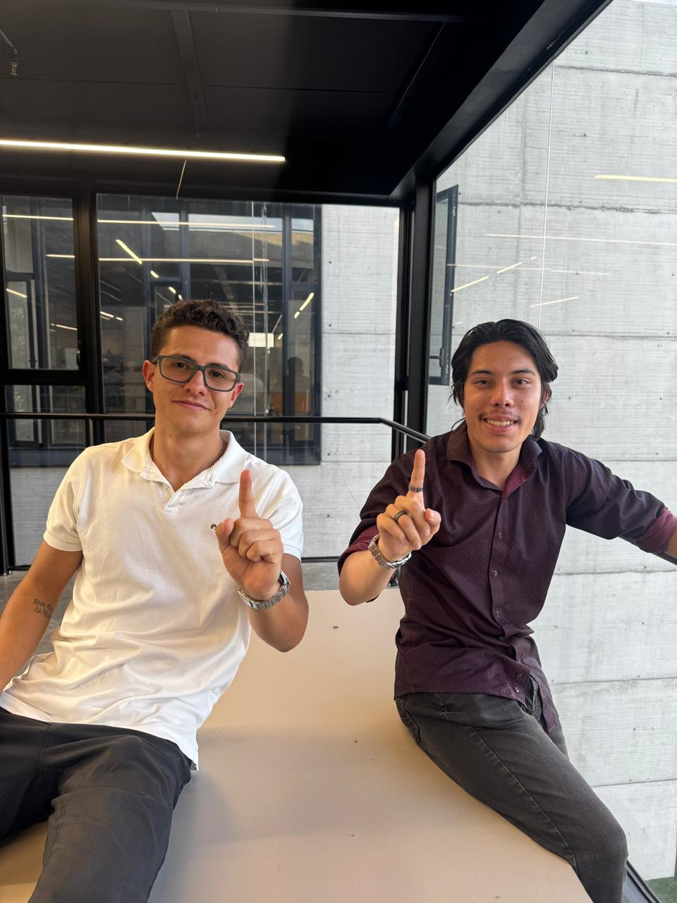

De la academia
a la ingeniería
Más experiencias, herramientas y vínculos para aprender haciendo.
Ver 5 iniciativas ↗Ingeniería Eléctrica y Electrónica
Una representación que conecta lo que aprendemos con lo que hacemos, y abre caminos para avanzar en la carrera.
Explora las propuestasNuestras propuestas se centran en acercar la academia al ejercicio de la ingeniería y realizar ajustes en la formación para que el avance por la carrera sea más fluido.
Ver propuestas ↗Más experiencias, herramientas y vínculos para aprender haciendo.
Ver 5 iniciativas ↗Preparar mejor las clases y revisar barreras y contenidos de la malla.
Ver 3 iniciativas ↗Estudiantes de Ingeniería Eléctrica y Electrónica, unidos para representar nuestras carreras.

#1 #4
#4Ocho propuestas organizadas en los dos ejes de trabajo. Elige un eje para explorarlas.
Proponer que cada estudiante realice al menos dos salidas de campo durante la carrera.
Promover un congreso anual de ingeniería eléctrica y electrónica con ponentes sobre avances de ingeniería aplicada.
Presentar a empresas la opción de donar materiales y equipos a la universidad, con reconocimiento correspondiente.
Crear un banco de cursos virtuales certificados de software para ingeniería.
Proponer un acuerdo marco UNAL–SENA para acceder a cursos prácticos de alta demanda.
Promover ajustes a prerrequisitos que puedan limitar innecesariamente el avance, especialmente en los primeros semestres.
Proponer una plataforma virtual donde cada profesor pueda presentar su asignatura antes del inicio de clases.
Impulsar el diálogo sobre contenidos compartidos entre asignaturas para acercarlos a aplicaciones de ingeniería y evitar redundancias.